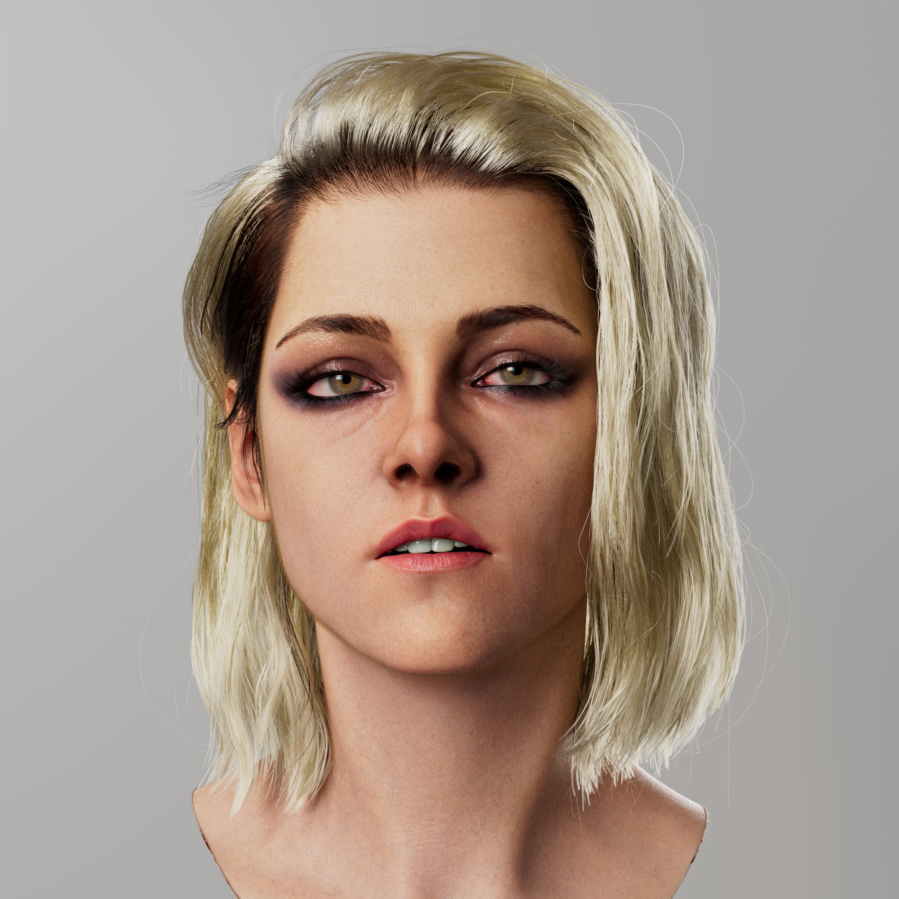
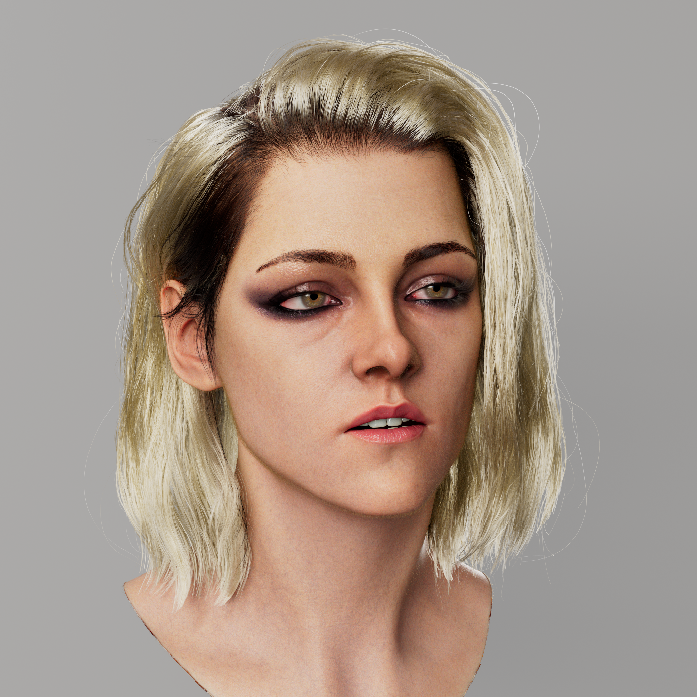
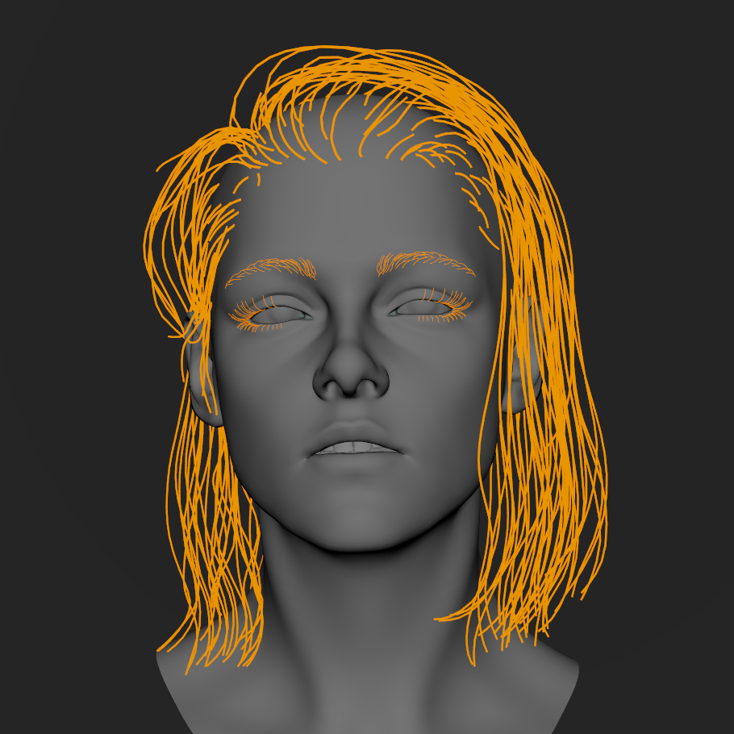
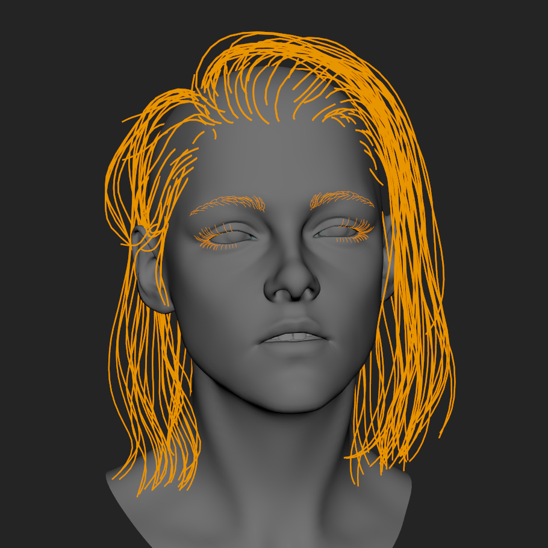
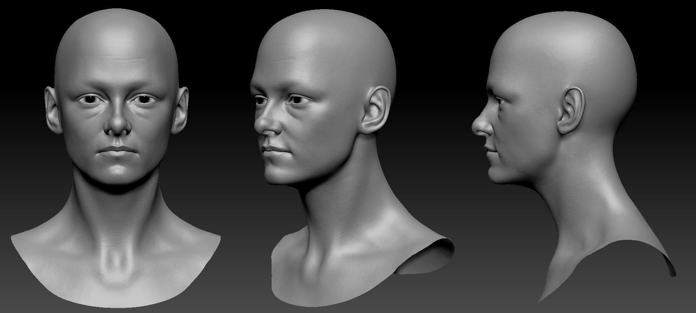

Kristen Stewart Likeness
This is my personal project. Achieving a convincing likeness has always been a challenge for me. Through this project, I found that elements such as makeup, dyed hair, and subtle facial expressions can really bring out the character's nuances.




